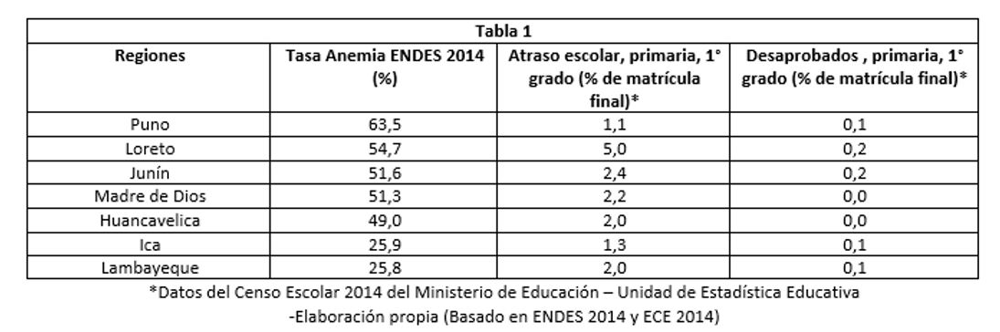
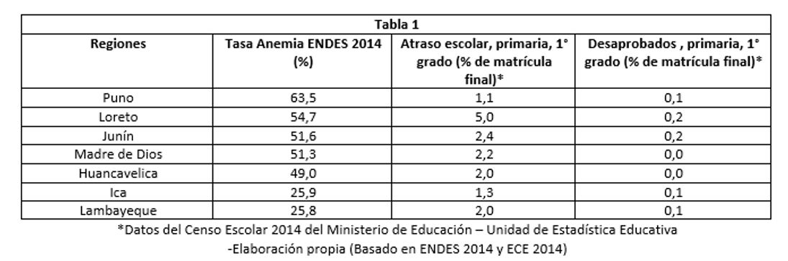

+51 952 839 351
+51 952 839 351
Cuantificación del impacto
 Cuantificación de los efectos
A pesar de que los beneficios significativos a los que la educación puede llevar en el ámbito individual, familiar y social, en la mayoría de los países en vías de desarrollo, la eficiencia educativa es comparativamente baja. En el caso del Perú, si bien la eficiencia educativa ha mejorado en los últimos años, aún subsisten serios problemas. El número de matriculados no cubre al 100% de la población en edad de asistir a la escuela, las tasas de deserción y repetición son altas, y los niveles de rendimiento en pruebas estandarizadas muestran notables desigualdades que favorecen a los estudiantes de los niveles socioeconómicos altos y son más bajos entre los más pobres. (1) La desnutrición en niños menores de 5 años está asociada a una mayor probabilidad de enfermedad o muerte; en edad escolar, genera mayor tasa de atraso escolar (2) (Ver Tabla 1).

Cuantificación de los efectos
A pesar de que los beneficios significativos a los que la educación puede llevar en el ámbito individual, familiar y social, en la mayoría de los países en vías de desarrollo, la eficiencia educativa es comparativamente baja. En el caso del Perú, si bien la eficiencia educativa ha mejorado en los últimos años, aún subsisten serios problemas. El número de matriculados no cubre al 100% de la población en edad de asistir a la escuela, las tasas de deserción y repetición son altas, y los niveles de rendimiento en pruebas estandarizadas muestran notables desigualdades que favorecen a los estudiantes de los niveles socioeconómicos altos y son más bajos entre los más pobres. (1) La desnutrición en niños menores de 5 años está asociada a una mayor probabilidad de enfermedad o muerte; en edad escolar, genera mayor tasa de atraso escolar (2) (Ver Tabla 1).

Etiam eu purus nec eros varius luctus. Praesent finibus risus facilisis ultricies venena tis. Suspendisse fermentum sodales lacus, lacinia gravida elit.